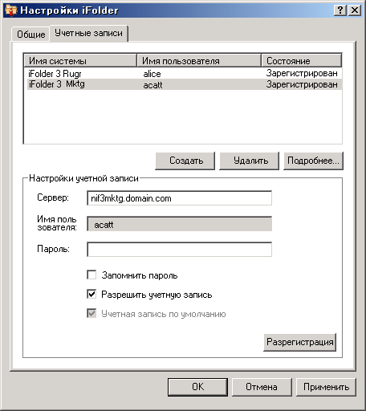

Конфигурирование учетной записи iFolder
Необходимо сконфигурировать, как минимум, одну учетную запись iFolder, прежде чем создавать папки iFolder или совместно использовать их в системе. Можно создать несколько учетных записей, но для каждого сервера может быть создана только одна учетная запись.
Пользователь с другим локальным именем и другой учетной записью может зарегистрироваться в том же компьютере и с помощью iFolder создать собственный набор папок iFolders. Однако система iFolder синхронизирует только папки iFolder, принадлежащие активному пользователю.
-
Для установки учетной записи воспользуйтесь одним из следующих способов:
- При первом запуске iFolder после его установки будет предложено настроить учетную запись iFolder. Щелкните "Да", чтобы перейти непосредственно в диалоговое "Настройки iFolder" > вкладка "Учетные записи".
- В области оповещения щелкните правой кнопкой значок приложения iFolder
 , затем выберите "Учетные записи" для открытия диалогового окна "Настройки iFolder" на вкладке "Учетные записи".
, затем выберите "Учетные записи" для открытия диалогового окна "Настройки iFolder" на вкладке "Учетные записи".
-
Щелкните "Создать" для доступа к области "Настройки учетной записи".
-
Укажите следующие значения:
Параметр Описание Сервер
Это DNS-имя или IP-адрес сервера iFolder, на котором у Вас есть учетная запись. Например: svr21.example.com или 192.168.1.1.
Имя пользователя
Введите имя пользователя для этой учетной записи. Администратор iFolder определяет, какой формат необходимо использовать: ИД пользователя сети (общее имя LDAP) или адрес электронной почты.
Например, для пользователя John Smith с сетевым именем jsmith и адресом электронной почты john.smith@example.com, администратор настраивает параметр для сервера, который определяет, какой из двух форматов будет использоваться в поле "Имя пользователя" для аутентификации.
Пароль
Пароль, соответствующий имени пользователя.
Запомнить пароль
Выберите "Запомнить пароль", чтобы при каждой Вашей регистрации в компьютере автоматически использовалась данная учетная запись iFolder. Для получения дополнительной информации см. раздел Регистрация с помощью учетной записи iFolder.
После смены сетевого пароля iFolder при следующей попытке регистрации с помощью учетной записи iFolder произойдет сбой автоматической аутентификации. Программа iFolder запросит Вас зарегистрироваться с новым паролем и позволит определить и сохранить его.
Разрешение учетной записи
Выберите "Разрешение учетной записи" для выполнения фоновой синхронизации приглашений iFolder, списка пользователей и папок iFolder для данной учетной записи.
Учетная запись по умолчанию
Выберите "Учетная запись по умолчанию", чтобы данная учетная запись выбиралась по умолчанию в раскрывающемся списке учетных записей при создании папок iFolder.
 -
Щелкните "OK" или "Регистрация".
Если будет запрошен сертификат, проверьте его и нажмите "OK" для его принятия. Учетная запись появится в списке со статусом "Зарегистрирован". iFolder начнет синхронизацию всех существующих папок iFolder, оповещений iFolder и списка пользователей для этой учетной записи.
-
Щелкните "OK" для закрытия диалогового окна "Настройки iFolder".
-
Настройте папки iFolder для учетной записи с помощью любого из следующих методов:
- Если папки iFolder доступны для учетной записи, появится всплывающее сообщение оповещения iFolder. Щелкните сообщение, чтобы открыть диалоговое окно "Папки iFolder". Перейдите к разделу Настройка доступной папки iFolder.
- Если нет доступных папок iFolder для учетной записи или нужно добавить их, щелкните правой кнопкой значок приложения iFolder, затем выберите "Папки iFolder" для открытия окна iFolder. Перейдите к разделу Создание папки iFolder.